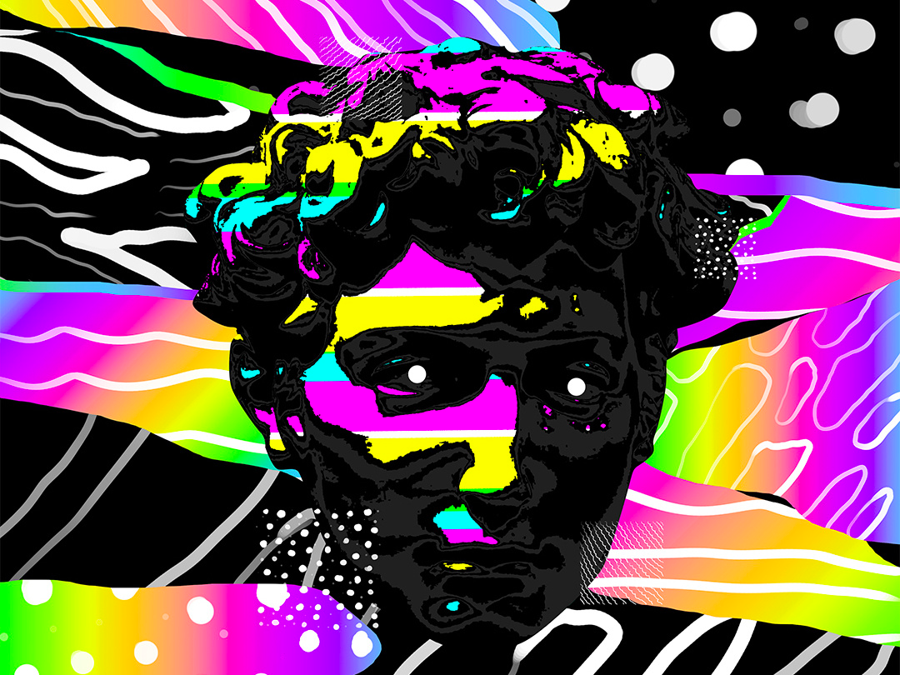
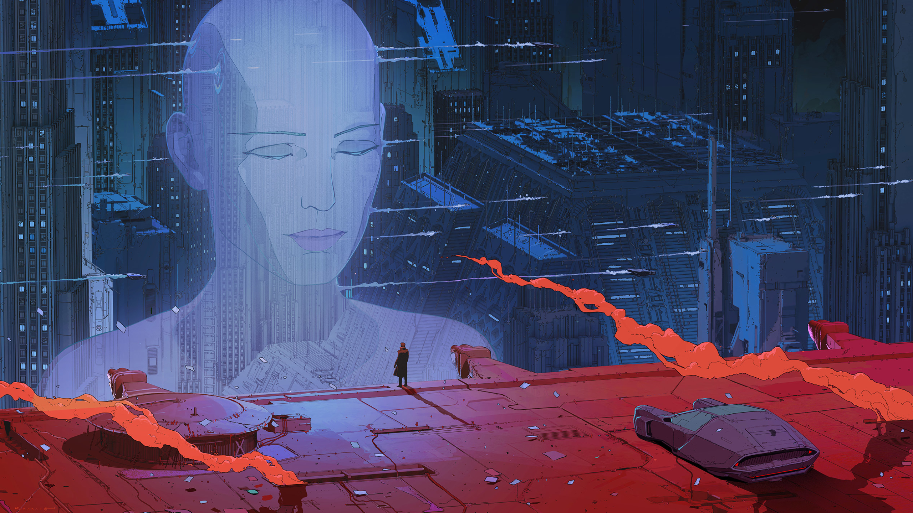

Project One
Visual elements of cyber punk:
1- Neon colors
2- Bright colors
3- Augmented Reality
4- Social Decay
5- Chromatic Aberration
6- 3D visualization
7- Dim lighting
8- Hazy or unclear vissuilazion
9- Thermal colors
10- Geometry
Interaction dynamics of cyberpunk
1- 3D
2- Augmented Reality
3- Interactive holograms
4- Vivid colors
5- Post-modern archeture
6- Chromatic Aberration
7- Vertual Reality
8- slow motion
9- EDM
The aesthetic I chose was Cyberpunk. I selected this aesthetic because of its vivid color and how individuals who never saw this aesthetic would be amazed by the integration of technological advances and postmodern architecture. Moreover, I choose this aesthetic because, in my perspective, I see that what is now regarded as science fiction might become our inevitable future if we continue creating new technology and pushing the limit of our plant by abusing the materials we use which are not environmentally friendly and if we as the whole human race do not think about how negatively we are impacting the planet. I would identify Cyberpunk as an aesthetic that is futuristic yet realistic. It is futuristic in using projected reality, neon colors, and geometry in visual representation and electronic/ raving in audio presentation, and it is realistic because in many of the visual designs that use the Cyberpunk aesthetic would be very gloomy and dark, Society would be in total disaster; many buildings would seem old and not being taken care of.

go to home page